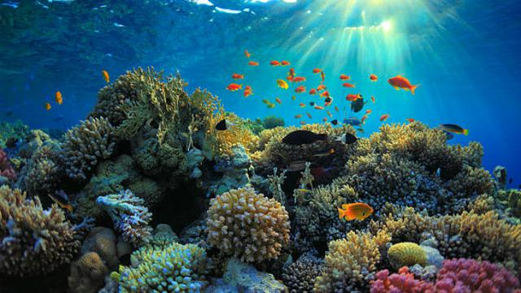

Wagub Kaltim Promosikan Destinasi Wisata Menarik di Samarinda

Pegiat wisata dan kalangan nelayan di daerah pesisir Muara Badak, Kutai Kartanegara, Kalimantan Timur makin intensif mengembangkan potensi wisata bawah laut. Potensi terumbu karang dan beragam biota di perairan Muara Badak ternyata tidak kalah menarik dengan spot-spot penyelaman atau diving di daerah-daerah lain
"Dulu orang tidak percaya kalau ada terumbu karang-terumbu karang cantik di sekitar sini," kata Mansur, koordinator Kelompok Masyarakat Pengawas Sumber Daya Kelautan dan Perikanan Muara Badak, di Muara Badak, Kamis (22/5/2021)
Orang tak percaya ada terumbu karang di perairan Muara Badak, kata Mansur, terutama dari sisi lokasinya. Daerah itu biasa disebut daerah kipas Sungai Mahakam, sehingga terumbu karangnya rawan mengalami pendangkalan. Selain itu memang sebelumnya daerah itu tidak populer sebagai destinasi wisata diving di Indonesia.
Namun dari hasil penelusuran Mansur dan teman-temannya, daerah perairan Muara Badak ternyata menyimpan potensi keindahan laut yang memikat. Dari penelusuran sejauh ini telah ditemukan sedikitnya 13 spot terumbu karang di sana.
eiring pendampingan diving berikut penyewaan alat selam oleh Pokdarwis itu, belakangan ini mulai banyak wisatawan yang melakukan penyelaman di Muara Badak. Mansur mengatakan, pengunjung yang masih belajar selam akan diajak ke spot yang relatif dangkal namun tetap memiliki pemandangan bawah laut yang indah
Ada yang unik dari penamaan spot-spot selam di Muara Badak. Nama-namanya disesuaikan dengan momen penemuannya. Spot Batu Hiu misalnya, saat awal ditemukan dahulu sedang banyak hiu di lokasi tersebut.